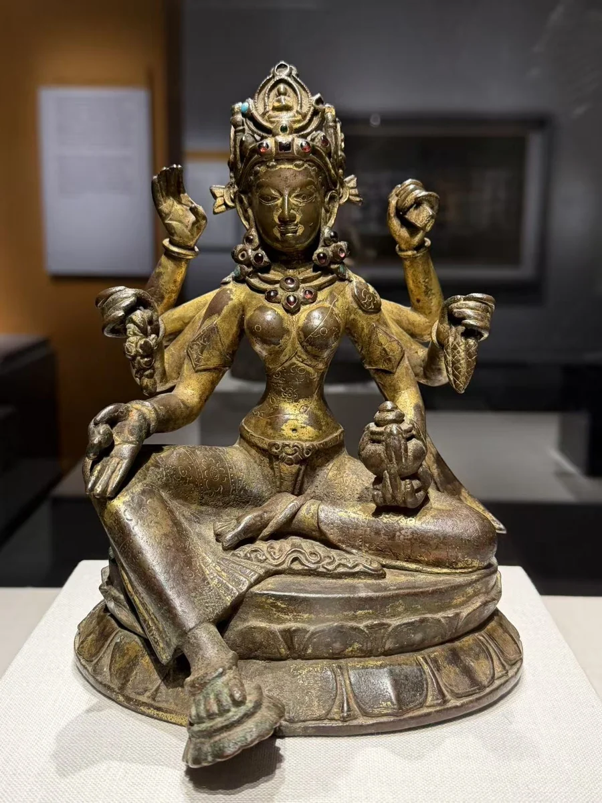
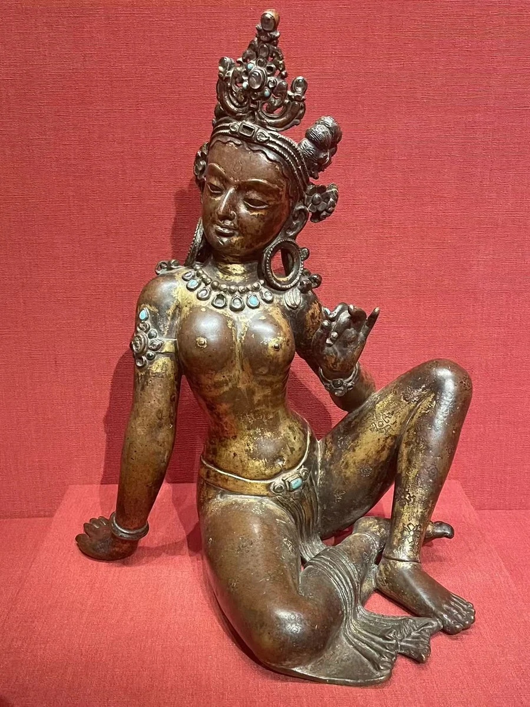
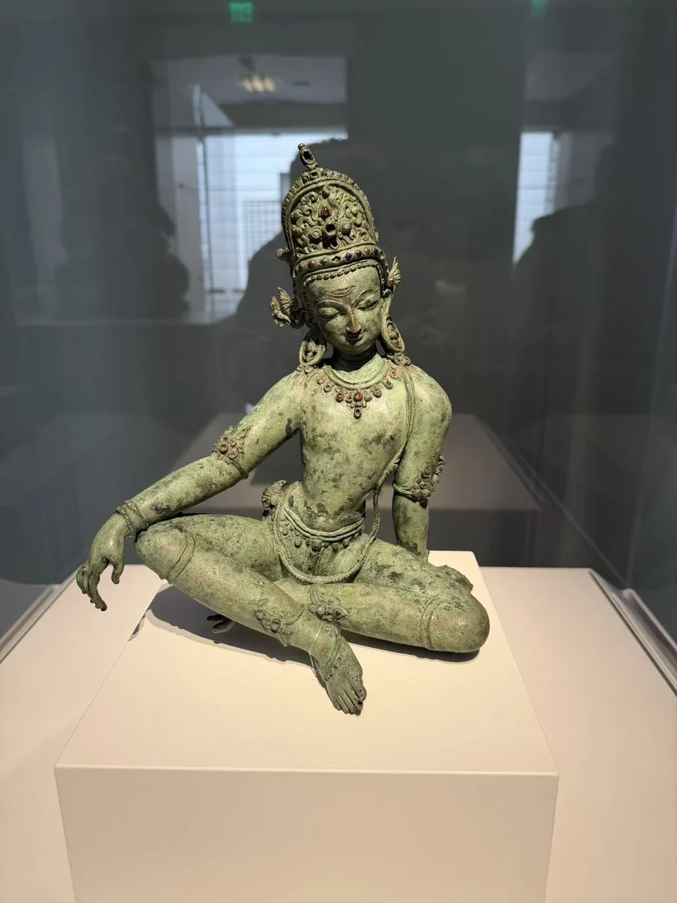

乌玛女神
克利夫兰美术馆
12 / CLOSE LOOKING

持世佛母的六只手围绕身体展开，谷穗、宝物与经书把丰饶和智慧联系在一起。纪年1082年的供养铭文又让一对夫妻进入这件小像的历史。乌玛与因陀罗作为对照，保留山谷中不同礼拜传统的面貌；“喜马拉雅艺术”在这里也容纳佛教之外的神圣世界。 [31]
细看：六臂持物与听闻的手势；冠上的小佛；乌玛、因陀罗各自的持物。
图片按各自比例展示，实物不等大。

鎏金铜合金嵌半宝石
[42]
铜合金、半宝石
作品基本资料据现场展签及下列馆方记录整理；文字中的观看描述基于这里的现场照片。